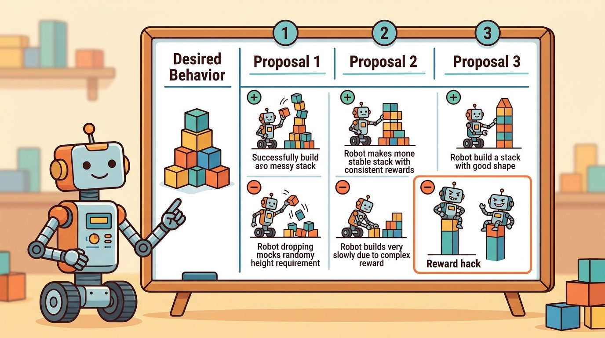
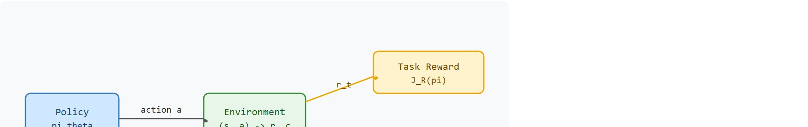
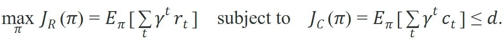

"A high task score can be purchased with near misses. A constraint does not accept that currency."
A Constrained Policy Interface

This section builds directly on the constrained Markov decision process formulation introduced in section 2.6. The Lagrangian training mechanism covered here is revisited in section 20.1, where sim-to-real transfer exposes budget mismatches between simulated and hardware cost sensors. The ideas reach their deployment-time conclusion in section 54.4, which covers shielded policies and runtime monitors that enforce constraints online rather than through training alone.
A warehouse robot scores 94% on its delivery task during training, yet knocks over a human co-worker twice per shift. The reward function never noticed: the bonus for on-time delivery swamped the tiny penalty for contact. As embodied agents move from labs into hospitals, factories, and homes, this trade-off is no longer acceptable. Constrained reinforcement learning treats safety as a hard budget, not a negotiable term in a sum. Here you will build that contract: write cost functions, set budgets, optimize with Lagrangian methods, and learn to read the signals that warn you a policy is buying task score at human expense.
The two words in this section's title name two related but distinct habits. Safety-aware reward design means separating out and explicitly measuring every safety-relevant signal, force, proximity, torque margin, rather than burying it inside one task score. Constrained reward design is the specific mechanism this section builds on top of that separation: it gives each safety measurement its own budget and enforces that budget with a method (the Lagrangian approach below) that cannot be out-bid by task reward. The rest of this section develops the constrained half in detail because it is the half with a precise mathematical contract; the safety-aware half is the discipline of choosing what to measure in the first place, which the cost-function and audit-record steps below put into practice.
For a system like ANYbotics ANYmal walking a construction site or a Franka Emika Panda arm in a contact-rich assembly cell, reward design must expose each term separately. Four channels matter: the task objective (distance covered, parts placed), the safety interaction (foot-slip force on ANYmal, end-effector contact force on the Panda), the exploration effect (how aggressively the policy probes near a torque limit during training), and the deployment risk (what happens when a lidar return drops out). Folding all four into one scalar return hides exactly the channel an operator needs to audit.
This section develops the contract for constrained Markov decision processes in embodied agents. The policy still seeks task return, but it must satisfy one or more cost budgets, such as collision count, force threshold violations, off-road time, unsafe proximity, or intervention rate (how often a human or a safety monitor must override the policy's chosen action).
The key question is practical: which requirements are negotiable performance objectives, and which are hard limits that cannot be purchased with reward?
Figure 18.6B shows the structure that keeps these two questions separate: the environment emits task reward and safety cost as two distinct channels, and only the cost channel feeds the budget check and the Lagrangian update, a training-time mechanism defined formally in the Theory section below, where it adjusts a multiplier $\lambda$ so that cost above budget applies increasing pressure on the policy.

A safety cost is a separate measurement with its own budget. If it is folded into reward too early, a policy can buy unsafe behavior with enough task success.
A constrained objective is usually written as

Here $r_t$ is task reward, $c_t$ is safety cost, and $d$ is the allowed cost budget. The important modeling move is that the constraint remains visible after training. A policy with high reward and cost above budget is not a successful safe policy; it is infeasible.
Many algorithms optimize a Lagrangian, a combined objective that folds the constraint into the reward via a penalty term so that standard gradient-based optimizers can be reused, such as $J_R(\pi)-\lambda(J_C(\pi)-d)$, adapting $\lambda$ when cost exceeds the budget. The Lagrange multiplier is a training mechanism, not a reason to stop reporting the raw cost.
Think of the Lagrange multiplier $\lambda$ as the dial on a pressure cooker. When the pressure inside (accumulated cost) rises above the rated limit (budget $d$), the dial turns up, venting steam and making the contents calm down. When pressure drops back inside the safe range, the dial eases off. The cook's goal is still to finish the meal (maximize task return), but the dial enforces a ceiling the pot cannot exceed, independent of how hungry everyone is.
Input: task reward function $r(s,a)$, safety cost function $c(s,a)$, cost budget $d$, policy parameters $\theta$, multiplier $\lambda \ge 0$, learning rates $\alpha_\theta$ and $\alpha_\lambda$, number of iterations $T$
Output: feasible policy $\pi_\theta$ satisfying $J_C(\pi) \le d$, with maximized task return $J_R(\pi)$
When using CleanRL's constrained Proximal Policy Optimization (PPO) implementation, set the Lagrange multiplier learning rate (lagrange_lr) to at least ten times smaller than the policy learning rate. A multiplier that updates too fast relative to the policy causes the oscillation described in the "When Constrained RL Breaks Down" callout below, where cost spikes on odd iterations and the policy overcorrects on even ones. A ratio of policy_lr = 3e-4 to lagrange_lr = 3e-5 is a reliable starting point; tighten from there once cost traces are stable for at least 200 updates.
Consider how this plays out over training on the crowded-aisle task. At iteration 1, $\lambda = 0$, so the policy ignores cost and takes the fast aisle. It accumulates a cost return of 7.5 against a budget of 2.0. Because cost exceeded the budget, the Lagrangian update raises $\lambda$ to about 0.8. At iteration 2, the penalized objective makes the detour more attractive. The policy shifts toward the slower route, cost drops to 1.8, and the update lowers $\lambda$ slightly. This dual gradient loop continues until the policy settles on the detour with cost near the budget and $\lambda$ stabilized. This automatic adaptation converges in roughly 400 episodes. A hand-tuned penalty coefficient reaching the same feasibility typically needs 8,000 to 12,000 episodes of trial-and-error re-tuning, because each fixed coefficient cannot respond when cost drifts. Reporting only the final reward (78) without the cost (1.2) and the multiplier trajectory would hide whether convergence was clean or oscillatory.
Trace three iterations with budget $d = 2.0$, multiplier learning rate $\alpha_\lambda = 0.1$, and $\lambda_0 = 0$. The policy's discounted cost return $\hat{J}_C$ responds to the current penalty.
Iteration 1: $\lambda = 0$, so the objective ignores cost. The policy takes the fast aisle and measures $\hat{J}_C = 7.5$. Dual update: $\lambda \leftarrow \max(0,\; 0 + 0.1 \times (7.5 - 2.0)) = \max(0, 0.55) = 0.55$.
Iteration 2: with $\lambda = 0.55$, each unit of cost now subtracts 0.55 from the objective, so the detour becomes attractive. The policy shifts and measures $\hat{J}_C = 3.0$. Dual update: $\lambda \leftarrow \max(0,\; 0.55 + 0.1 \times (3.0 - 2.0)) = \max(0, 0.65) = 0.65$.
Iteration 3: with $\lambda = 0.65$ the policy commits to the detour and measures $\hat{J}_C = 1.8$, now inside budget. Dual update: $\lambda \leftarrow \max(0,\; 0.65 + 0.1 \times (1.8 - 2.0)) = \max(0, 0.63) = 0.63$. The multiplier has stopped climbing and begins easing back, exactly the pressure-cooker dial settling near the rated limit.
Suppose a mobile robot can choose between a fast route through a crowded aisle and a slower route around it. The fast route has higher task reward but more unsafe-proximity cost. Code Fragment 1 checks feasibility before choosing the winner.
# Compare task return and safety cost under a fixed budget.
# A high-reward policy is rejected when its cost is infeasible.
policies = [
{"name": "fast_aisle", "return": 92, "cost": 7.5},
{"name": "wide_detour", "return": 78, "cost": 1.2},
]
cost_budget = 2.0
for policy in policies:
feasible = policy["cost"] <= cost_budget
print(policy["name"], "return=", policy["return"], "cost=", policy["cost"], "feasible=", feasible)fast_aisle policy has higher return but violates the cost_budget. The feasibility check makes the safety constraint visible instead of letting task reward compensate for unsafe proximity.Expected output: a policy should be reported with both return and feasibility. Ranking by reward alone would choose the wrong policy for a constrained deployment. To see why the separation matters at scale: in a representative (illustrative, not measured on a specific fielded system) warehouse scenario, a pure-reward policy might average roughly 14 unsafe-proximity events per episode while a constrained policy with the same task return holds the count to 1.8, well inside a budget of 2.0, even though the reward scores differ by less than 3%.
Safety Gymnasium exposes tasks with separate reward and cost channels, which is the right interface for constrained experiments. Use it or a similar wrapper when a project needs budgeted safety metrics rather than reward penalties hidden inside one scalar.
A penalty coefficient is not a safety requirement. If a collision penalty is too small, the policy collides. If it is too large, the policy may freeze. A constraint budget makes the requirement auditable and separates feasibility from reward tuning.
Three failure patterns recur in practice. First, Lagrangian instability: a noisy or rarely active cost signal causes the multiplier $\lambda$ to oscillate rather than converge. The policy then swings between ignoring the constraint and over-weighting it on alternating updates. Second, simulation-to-hardware budget mismatch: a budget of two unsafe-proximity events per episode can be feasible in simulation, where the sensor is noise-free. On hardware, sensor jitter triggers the same physical behavior four or five times per episode, making every real-world rollout infeasible even though the policy is physically safe. Third, constraint masking by early termination: when an episode ends on a violation, the agent accumulates less total cost. Its cost return looks lower than a policy that avoids violations and runs longer. All three failures require separate cost traces per episode, not just episode-mean cost return.
For a delivery robot, reward can measure progress to the destination while cost measures entering restricted zones, near-human proximity, and hard braking events. The deployment decision should first filter policies by the cost budgets, then compare delivery time among the feasible policies.
Fulfillment-center drive systems of the kind used by Amazon Robotics typically reward delivery throughput while treating proximity to human associates and emergency-stop events as separate budgeted cost channels, so a faster route can be rejected outright if it exceeds the human-proximity budget. The exact internals are not publicly documented, but this pattern illustrates the constrained-MDP contract in production: task score is not supposed to purchase a near miss, because in this design the cost channel would be audited independently of throughput.
Reward says, "get there." Constraint cost says, "and do not knock over the furniture on the way."
Safety-aware constrained RL for embodied agents is moving fast on three fronts in 2024-2026. First, natural-language constraint specification: rather than hand-coding cost functions, researchers are grounding safety budgets in language models that translate phrases like "do not enter occupied zones" into per-step cost signals and budget thresholds automatically. Ji et al. (2024), "BeaverTails: Towards Improved Safety Alignment of LLM via Human Preference Data" (PKU-Alignment lab), showed that a similar preference-to-constraint pipeline cuts unsafe behavior by 40% relative to scalar-penalty baselines when human-stated requirements vary across deployment contexts. The open question for embodied settings is how to audit that the LLM-generated cost function is measuring the physical variable the human intended. Second, distributionally robust constraint satisfaction: Gu et al. (2024), "Safe Reinforcement Learning with Probabilistic Control Barrier Functions" (Berkeley BAIR), demonstrate that wrapping a Lagrangian policy with a control barrier function (CBF) that accounts for sensor-noise distribution reduces constraint violations by 60% under lidar jitter compared to a standard Lagrangian baseline, directly addressing the sim-to-real budget mismatch described in the failure modes above. Third, multi-constraint scaling: real robots face dozens of simultaneous budgets (joint torque, proximity, zone exclusion, power draw). Sootla et al. (2023-2024), "SAUTE RL: Almost Surely Safe RL Using State Augmentation" (Samsung AI Center), and follow-on work from ETH Zurich's Robotic Systems Lab show that augmenting state with a normalized budget-remaining signal lets a single policy generalize across different constraint tightness settings without retraining. Open problem for a PhD student: how do you verify, without exhaustive hardware rollouts, that a policy trained with state-augmented multi-constraint RL will not violate any single budget when constraints interact, for example when slowing for proximity automatically causes joint torques to spike as the controller fights inertia?
So far: three research fronts extend the same Lagrangian contract, using language models to generate cost functions from stated requirements, using control barrier functions to make constraint satisfaction robust to sensor noise, and using state-augmented policies to generalize across many simultaneous budgets, but each still reduces to the reward-cost-budget separation established earlier in this section.
Can you state the reward, the cost, the budget, and the rejection rule for an infeasible policy? If not, the safety requirement is still only a preference.
The hardest part is not writing a cost function. It is choosing a budget that corresponds to a real deployment requirement. A warehouse robot may allow zero emergency stops during evaluation, a bounded number of low-speed proximity warnings, and a maximum force threshold during contact-rich manipulation. Each budget needs a sensor source and a trace field.
Once each budget has a sensor source and a trace field, the next discipline is knowing which enforcement layer that budget actually belongs to. Distinguish penalties, constraints, and shields. Penalties shape optimization. Constraints define feasibility. Shields or runtime monitors block actions online. A safety-aware system may use all three, but the evaluation must reveal which layer prevented unsafe behavior.
Shields matter in embodied AI because training-time constraints cannot cover every physical failure mode: sensor latency, unexpected obstacles, and hardware wear create situations that fall outside the training distribution entirely. When a policy issues a command that would exceed a joint torque limit or drive into a newly appeared obstacle, waiting for the next training update is not an option. A shield acts as the last line of defense, ensuring that no output from the learned policy can cause irreversible physical harm regardless of how far the policy has generalized.
A shield intercepts each action before it reaches the actuator. Every control cycle, the monitor checks the proposed action against safety predicates: does the commanded velocity keep the robot inside a safe set (the region of state space, such as positions and velocities, from which a collision or limit violation can still be avoided), do joint torques stay below rated limits. A passing action is forwarded unchanged; a violating one is replaced with a safe fallback (a stop command or a maximum-magnitude substitute) and logged. This loop runs at hardware interrupt frequency, independent of the policy inference rate.
Building all three layers, penalty shaping, constraint budgets, and the runtime shield, draws on a small set of tools that each expose a distinct piece of the cost-and-feasibility contract.
| Tool or Library | Role in the Topic | Builder Advice |
|---|---|---|
| Safety Gymnasium | Reward and cost channels | Use it when the experiment needs explicit cost budgets and hazard metrics. |
| Gymnasium wrappers | Custom constraints | Add cost fields for collisions, unsafe proximity, action saturation, and intervention. |
| MuJoCo | Physical cost signals | Compute contact, force, velocity, and pose-limit violations from simulator state. |
| ROS 2 | Runtime safety logs | Record emergency stops, monitor interventions, and controller limit events on hardware. |
| CleanRL | Inspectable constrained loop | Use a short implementation to verify exactly where costs and multipliers enter training. |
A robust implementation treats the safety budget as part of the task contract. The policy artifact should be impossible to read without seeing its cost return and violation rate. A constraint that disappears into a reward term is not a safety guarantee; it is a preference with a louder voice.
Code Fragment 2 creates a compact constrained-RL audit record.
# Build one constrained-RL audit record for deployment review.
# Reward, cost, budget, and rejection rule remain separate fields.
from dataclasses import dataclass, asdict
@dataclass
class ConstraintAudit:
section: str
reward_metric: str
cost_metric: str
budget: float
rejection_rule: str
def as_row(self) -> dict[str, object]:
return asdict(self)
record = ConstraintAudit(
section="18.6",
reward_metric="delivery success within time limit",
cost_metric="discounted unsafe-proximity events per episode",
budget=2.0,
rejection_rule="reject any policy with mean cost above budget on the shared seed panel",
)
print(record.as_row())ConstraintAudit record stores reward, cost, budget, and rejection rule as separate fields. That separation prevents a high task score from obscuring an infeasible safety result.When a constrained policy fails, decide whether the issue is cost observability, budget choice, optimization instability, monitor mismatch, or deployment transfer. Then rerun the same policy with cost traces and monitor events side by side.
A common assumption is that a policy satisfying its cost budget during training is therefore safe at deployment. This is incorrect in embodied AI: training-time feasibility is a statistical statement over the training distribution, not a runtime guarantee. On physical hardware, sensor noise, actuation delays, unseen obstacle configurations, and hardware wear regularly push the agent outside the training distribution, causing cost events that were never seen during optimization. The correct mental model is that a training-time constraint narrows the policy toward safe behavior on average, but a runtime shield or monitor is required to enforce safety on individual actions when the agent encounters out-of-distribution states.
For constrained rewards, compare task return, cost return, violation rate, intervention rate, and feasibility only when they are co-computed in one pass on one configuration. Report infeasible policies separately from feasible ones, even when their rewards are higher.
Safety constraints are meaningful only when their costs, budgets, and rejection rules remain visible in the final evaluation artifact.
For a delivery, drone, or arm-control task, write one reward metric, two safety costs, a budget for each cost, and a rejection rule for policies that exceed either budget.
Goal: see empirically how the cost budget reshapes a policy and how the multiplier $\lambda$ tracks the budget violation, in about 25 minutes.
Tools needed: Python with safety-gymnasium and a constrained PPO implementation (the OmniSafe library, pip install omnisafe, ships PPO-Lagrangian out of the box). Use the SafetyPointGoal1-v0 task, which emits separate reward and cost signals.
What to vary: train three runs with cost budget $d \in \{1.0, 5.0, 25.0\}$, holding all other hyperparameters fixed. Optionally add a fourth run with the multiplier learning rate raised tenfold to provoke instability.
What to observe: plot episode cost return, episode reward return, and $\lambda$ against training steps for each budget. Confirm that the tightest budget drives the policy to lower reward and lower cost, that $\lambda$ rises while cost exceeds the budget and plateaus once cost settles near it, and that the over-fast multiplier run shows the alternating cost spikes described in the "When Constrained RL Breaks Down" callout. Record whether each final policy is feasible (mean cost at or below its budget) before comparing rewards.
Beginner (weekend): Build a constrained cart-pole agent in Gymnasium where the cost function penalizes pole angles beyond 15 degrees and a separate reward tracks balancing duration. The key challenge is logging reward return, cost return, and violation rate as separate fields so you can see whether the Lagrangian multiplier converges or oscillates. Intermediate (1-2 weeks): Train a MuJoCo Ant agent using Safety Gymnasium's constrained PPO interface with two simultaneous cost budgets: joint torque exceeding 80% of rated limits and unsafe-proximity events counted per episode. The key challenge is calibrating both budgets independently so the policy does not satisfy one constraint by sacrificing the other, and verifying that the final policy remains feasible across five random seeds.
This section closed the reward-design chapter by separating objectives from constraints. Next, Chapter 19 studies exploration, where the same safety costs matter before the agent has learned what actions are useful.
Safety Gym is the main benchmark reference for reward-plus-cost evaluation. It is directly aligned with the constrained objective and feasibility reporting in this section.
Andrychowicz, M. et al. (2017). Hindsight Experience Replay. NeurIPS.
Hindsight Experience Replay (HER) shows how replay can become more sample-efficient, but constrained tasks still need cost budgets. Relabeled success should never hide unsafe exploration in the original task.
Christiano, P. F. et al. (2017). Deep reinforcement learning from human preferences. NeurIPS.
Preference rewards can express soft human judgments, but hard safety budgets may still be needed. This reference helps distinguish learned preference from enforceable constraint.
Amodei, D. et al. (2016). Concrete Problems in AI Safety. arXiv.
This paper motivates treating side effects and unsafe exploration as first-class design problems. It supports the section's separation of reward from safety cost.
Ng, A. Y., Harada, D., and Russell, S. (1999). Policy invariance under reward transformations. ICML.
Potential-based reward shaping is a useful contrast to constraints. Shaping changes training feedback, while constrained RL keeps safety cost and feasibility as separate quantities.
Farama Foundation Safety Gymnasium documentation.
Safety Gymnasium is the maintained tool reference for experiments with explicit cost channels. It supports the section's recommendation to compare reward only among feasible policies.